Как читать авторский курс и нормативные материалы
Это учебные материалы, а не заключение о соответствии конкретного продукта. Организационные модели курса отделяйте от терминов стандарта: ППК в опубликованном проекте — машиночитаемый перечень, а живой реестр его версий является практикой сопровождения. Термин OSA в разных материалах имеет разный охват. Статус и обязательность нормативного документа проверяются отдельно; проект КАПО опубликован как проект первой редакции.
М15. Методика преподавания и итоговая аттестация
Зачем модуль
Это единственный модуль курса, адресованный преподавателю, а не слушателю. Он отвечает на вопрос «как вести этот курс из 16 содержательных модулей (М00–М14, М16) и 40 практик (П01–П40), чтобы на выходе человек умел не запускать инструмент, а защитить решение по составу ПО перед ИБ, DevOps, юристом и руководителем». Здесь собраны форматы занятий, регламент работы со стендом, разбор типовых затруднений слушателей и устройство итоговой аттестации (20 билетов плюс итоговый проект) с разбираемыми критериями оценивания.
Что внутри модуля
- 01 Конспект — форматы лекция/демо/ПЗ, дидактика стенда, карта затруднений, как читать рубрику аттестации.
- 02 План занятия — сценарий дня итоговой аттестации (180 минут): инструктаж по критериям, калибровка оценки, защита проектов.
- 03 Практическая работа — преподаватель оценивает один готовый билет и фрагмент проекта по общей рубрике (калибровочный прогон).
- 04 Контрольные вопросы — методические вопросы и кейс-задачи о ведении курса и снятии затруднений.
- 05 Что проверять на проекте — чек-лист эксперта для приемки итогового проекта.
Куда ведут связи
Модуль завязан на раздел оценивания и сквозные практики: - аттестация: Итоговый проект · Билет 01; - стенд и старт: М00 Ориентация в курсе · П01. Стенд WSL2 Docker; - финальная отработка навыка: П36. Итоговый мини-проект · П29. Readiness dashboard; - частые точки затруднений: П23. Статическая линковка · П09. VDR и VEX · П24. PURL нормализация; - нормативная опора компетенций: ГОСТ Р 56939-2024.

Практический результат для преподавателя
Провести занятие любого из 16 модулей в формате лекция → демо → ПЗ на стенде, распознать и снять 5–7 типовых затруднений слушателей, и оценить итоговую работу по единой рубрике 100 баллов так, чтобы две оценки от разных экспертов расходились не более чем на один блок.